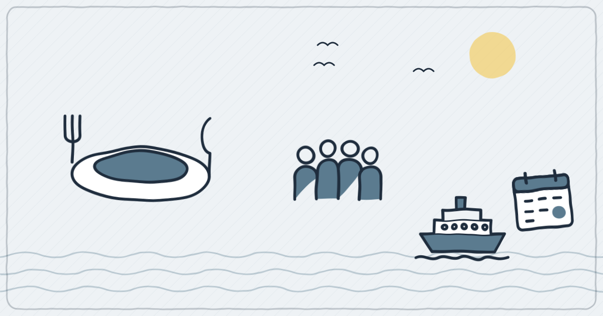

Eating Together on a Cruise With 15, 20 or 30 People
Main dining room tables top out around 8–12 seats, so a group of 20 eats at two or three neighbouring tables with the same service team, not one long table. Choose traditional fixed seating, request linked tables when the group booking opens, and reserve a private room for the one night you want a single table.

A family reunion, a milestone birthday or a club trip of 20 can have dinner together every night of a cruise. What it cannot have, in the main dining room at least, is one single table. Expect two or three tables pushed close together with the same waiters, arranged weeks before sailing, with a private room booked for the one evening that deserves a toast.
How big are cruise ship dining tables?
The main dining room on most ships is laid out in twos, fours, sixes, eights and a limited number of tens or twelves. Those big rounds are the scarcest furniture on board, which is why a group that asks on embarkation day ends up scattered. Twenty people usually get two tables of ten, or a twelve and an eight, close enough to swap seats between courses. Thirty gets three tables in the same section.
A single table for 20 means a private or semi-private room. Many ships have one off the main restaurant or inside a specialty venue, bookable for a night or two, sometimes with a set menu and a per-person charge or minimum spend. That is the venue for the anniversary speech, not for every night.
Fixed seating or flexible dining for a group?
This decision matters more than which ship you pick.
| Dining style | How it handles 20 people | Verdict for groups |
|---|---|---|
| Traditional fixed seating (early or late) | Same tables, same time, same waiters nightly, assigned before sailing | Best choice |
| Flexible (My Time, Anytime, Select) | Reserve a time daily; large parties wait or get split on busy nights | Workable with nightly reservations made months out |
| Freestyle (Norwegian) | No fixed seating at all; reserve large-party slots per restaurant | Expect some nights apart |
| Private dining room | One table or room, set menu, fee or minimum | One celebration night |
| Specialty restaurant | Possible on quiet nights, booked far ahead | A splurge night |
| Buffet | Push tables together, no booking | Lunches, kids' early dinners |
Fixed seating wins because the waiters learn the allergies, the kids' names and who wants coffee by night two. Royal Caribbean, Carnival, Princess, Celebrity and Holland America all still offer it on most ships. Norwegian's Freestyle model has no fixed option, so a Norwegian group should pre-book large-party times in two or three restaurants and accept a split night or two.
When and how do I book group dining?
As soon as the group block exists. Large tables are allocated first come, first served, and early seating fills months before sailing on holiday weeks.
- Pick a seating time. Early (around 5:30–6 pm) suits children and grandparents; late (around 8–8:30 pm) suits adults who want full port days. Times vary by ship.
- Link every booking number. Include anyone who booked before the group was formed. Unlinked cabins are the usual reason someone ends up at a table of strangers.
- Ask in writing for adjacent tables, one section, one waiter team. Those exact words.
- Submit dietary needs as one list for the whole group, not 20 separate emails.
- Reserve the celebration night now. Private rooms and specialty slots for 20 go fast.
- Reconfirm 30–45 days before sailing, and again with the maître d' within an hour of boarding.
That last visit is not optional. Bring the confirmation email, be friendly, and ask to see the table assignment. Maître d's fix problems easily on day one and painfully on day three.
How much does group dining cost?
Main dining room dinners cost nothing extra, so nightly linked tables add zero to the budget. The optional extras do:
- Specialty restaurant: roughly US$40–80 per person at recent prices, about C$55–110, before drinks and an automatic service charge of around 18–20%.
- Private dining room: often the specialty price per person, sometimes a room minimum instead.
- Wine for the table: bottles run US$35–60 and up; a per-head limit stops the bill surprising the organiser.
Settling the bill is easier if everyone understands how the onboard account works and in what currency, which paying in CAD or USD on a cruise explains. Members of your group who served may also qualify for fare reductions, listed in cruise military and first responder discounts.
How do you make two tables feel like one?
- Mix households across the tables so cousins and new partners actually talk.
- Rotate seating every couple of nights; put someone in charge of the plan.
- Leave two nights open for the buffet, a quiet dinner for two or room service.
- Tell the head waiter early about birthdays, so the cake and song land on the right night.
- Agree a shared pre-dinner meeting spot, such as a bar near the restaurant, so stragglers do not hold up the seating.
Which lines handle big groups best?
Lines with traditional fixed seating are the easy ones: Royal Caribbean, Carnival, Princess, Celebrity and Holland America. Carnival and Royal Caribbean also run large, experienced group departments. Lines without fixed seating can still work, but somebody in the group has to manage reservations nightly. Ships that cluster cabins for groups help too, since a party on one deck gathers for dinner far more easily than one spread over six.
For a reunion with older relatives, the same accessibility desk that handles table requests also arranges hearing and vision support; cruising with hearing or vision loss covers what to ask for.
Want this checked for your own sailing? A licensed cruise consultant can price it up and answer questions for free, with no obligation.
Ask a cruise expert →Get it in writing, then confirm twice
Fixed seating, adjacent tables, every booking number listed, one dietary list, a private room for the big night, reconfirmed a month out and again at the maître d' stand. Do that and dinner is the easiest part of organising 20 people.
Still wondering?
Will the ship put our whole group at one table?
Not in the main dining room, where the largest tables seat roughly 8 to 12. Twenty people get two tables of 10 or a 12 and an 8 side by side. For one night at a single table, book a private dining room or a specialty restaurant buyout.
Does flexible dining work for a big group?
Poorly, unless you reserve a fixed time for the whole party every night well in advance. Anytime-style dining on busy evenings means waits and split tables. Traditional fixed seating gives the group the same tables, time and waiters all week.
Is there a charge for group seating in the main dining room?
No. Dinner in the main dining room is included in the fare for every guest, and linked tables cost nothing. Specialty restaurants and private rooms carry per-person fees, roughly US$40–80 each at recent prices plus drinks and a service charge.